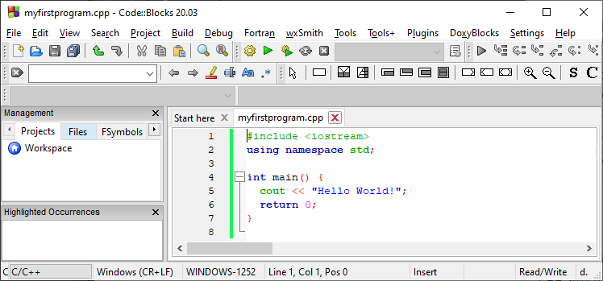
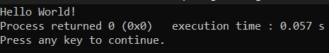

1) C++ is a cross-platform language that can be used to create high-performance applications.
2) C++ was developed by Bjarne Stroustrup, as an extension to the C language.
3) C++ gives programmers a high level of control over system resources and memory.
4) The language was updated 4 major times in 2011, 2014, 2017, and 2020 to C++11, C++14, C++17, C++20.
1) C++ is one of the world's most popular programming languages.
2) C++ can be found in today's operating systems, Graphical User Interfaces, and embedded systems.
3) C++ is an object-oriented programming language which gives a clear structure to programs and allows code to be reused, lowering development costs.
4) C++ is portable and can be used to develop applications that can be adapted to multiple platforms.
5) C++ is fun and easy to learn!
6) As C++ is close to C, C# and Java, it makes it easy for programmers to switch to C++ or vice versa.
1) C++ was developed as an extension of C, and both languages have almost the same syntax.
2) The main difference between C and C++ is that C++ support classes and objects, while C does not.
Let's create our first C++ file.
Open Codeblocks (you can open any other software as well) and go to File -> New -> Empty File.
Write the following C++ code and save the file as myfirstprogram.cpp (File -> Save)
#include< iostream>
using namespace std;
int main()
{
cout << "Hello World!";
return 0;
}
Don't worry if you don't understand the code above. For now, focus on how to run the code.
In Codeblocks, it should look like this:

Then, go to Build > Build and Run to run (execute) the program. The result will look something to this:

Congratulations! You have now written and executed your first C++ program.